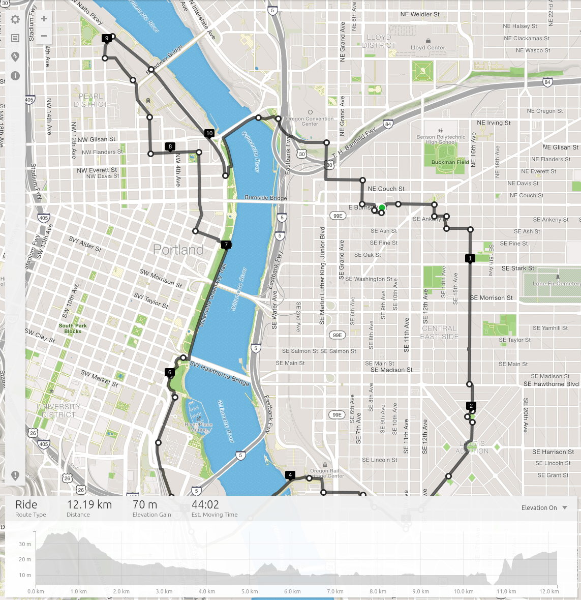

Full Schedule
Everything you need to know, day by day.

Bossanova Ballroom
Doors @ 9:00am
9:30am-11:30am
Workshop: TensorFlow Docs Sprint
9:30am-11:30am
Workshop: How to Have Curious Conversations
12:30pm-4:30pm
Workshop: Getting Started w/ Keras/OpenCV
2:00pm @ Bossanova Ballroom
Join your fellow attendees for a leisurely ride around Portland.
7:00pm @ Bossanova Ballroom
Get your badge and mingle. Open bar, special guest speakers, live entertainment, and more!
Bossanova Ballroom
Doors @ 8:00am
Talks from 9:00am-5:00pm
Model Building: Refreshing Yoga Session @ 10:15am
Lunch @ Noon
Lightning Talks @ 1:00pm
Hiring Speed Networking @ 3:00pm
Family Photo @ 5:00pm
7:00pm-11:00pm @ Pips & Bounce
NOTE: Minors are welcome, but only until 9pm!
Bossanova Ballroom
Doors @ 8:00am
Talks from 9:00am-5:00pm
Model Building: Refreshing Yoga Session @ 10:15am
Lunch @ Noon
Lightning Talks @ 1:00pm
Hiring Speed Networking @ 3:00pm
The conference has ended, but we're all still here. Find some friendly faces and invite them to dinner or #relaxml brunch before you leave the venue!
Find your tribe on Slack, or on Twitter using the hashtag #ml4all.
Join your fellow attendees for a leisurely ride around Portland.
Meet in the Bossanova Ballroom parking lot. Click here for more info...
Get your badge and mingle. Open bar, special guest speakers Oz du Soleil and Wendy Bukoski, live entertainment, pool tables, and more! Minors are allowed the entire evening, so feel free to bring your kids and +1s (or +2s, we've got room).
In the upstairs lounge at the Bossanova Ballroom.
Enjoy the powerful and thoughtful music of local band The Dark Mother.
Come grab a light breakfast snack, handmade coffee or chai. Bling out your badge, mingle with other attendees, and find your perfect spot to camp out in for the day.
NOTE: While we know that "the early bird catches the worm", please DO NOT arrive early. We will be setting up in the morning, and will not be able to allow access to the building until 8:00am. If you get there early, you'll be waiting around on the sidewalk out front...
The ML4ALL Team will introduce the conference, and share some important info with the crowd.
Take some time between talks to stretch out and get your body comfortable. The one and only Allison Krug will lead a short yoga session, suitable for all levels of skill and fitness.
Or if you prefer just grab a pastry, and discuss the first two talks with one another. Meet someone new! Look out for the designated Introducer if you need help saying hello for the first time.
Lunch will be provided. Head downstairs to the parking lot for food carts and #FREEHOTSOUP. Vegetarian, vegan, gluten-free options included in the standard menu. Drinks available from the bar inside.
Looking for a job? Looking to hire someone? Head up to the upstairs lounge and take part in Hiring Speed Networking! This event pairs potential employeers with job seekers for quick 1min chat. Everyone gets to talk to everyone! :)
Of course, if you're not interested in any of that, you can always grab a discuss, and discuss the previous talks with one another. Meet someone new! Look out for the designated Introducer if you need help saying hello for the first time.
Pips & Bounce is an awesome adult and kid-friendly ping-pong focused venue. With 10 tables, unlimited amounts of ping-pong balls, snacks, and a full bar, we dare you not to have fun. Drinks and light snacks will be provided, and you're welcome to invite as many of your friends and family as you'd like!
Make sure someone in the group has a ML4ALL badge with them, to gain access. If you are over 21 and want to drink, please remember to bring ID. Under 21 guests are welcome and encouraged, but only before 9pm!
Come grab a light breakfast snack, handmade coffee or chai. Bling out your badge, mingle with other attendees, and find your perfect spot to camp out for the day.
The ML4ALL Team will introduce the conference, and share some important info with the crowd.
Take some time between talks to stretch out and get your body comfortable. The one and only Allison Krug will lead a short yoga session, suitable for all levels of skill and fitness.
Or if you prefer just grab a pastry, and discuss the first two talks with one another. Meet someone new! Look out for the designated Introducer if you need help saying hello for the first time.
Lunch will be provided. Head downstairs to the parking lot for food carts and #FREEHOTSOUP. Vegetarian, vegan, gluten-free options included in the standard menu. Drinks available from the bar inside.
Looking for a job? Looking to hire someone? Head up to the upstairs lounge and take part in Hiring Speed Networking! This event pairs potential employeers with job seekers for quick 1min chat. Everyone gets to talk to everyone! :)
Of course, if you're not interested in any of that, you can always grab a discuss, and discuss the previous talks with one another. Meet someone new! Look out for the designated Introducer if you need help saying hello for the first time.
The conference has ended, but we're all still here. Find some friendly faces and invite them to dinner before you leave the venue!
Find your tribe on Slack, or on Twitter using the hashtag #ml4all.
#relaxml Brunch: Around Wednesday? Organize #relaxml brunch plans with other attendees for Wed morning. It's a great way to decompress before heading back home. Post photos and invites until the #relaxml hashtag!
P.S. Don't forget to join us in Slack to keep the conversations going until the next conference!
Still hanging around Portland after the conference? Make plans to meet up with your fellow attendees, on Twitter under the hashtag #relaxml or in the #relaxml Slack channel.
P.S. If you post pics under the hashtag, you'll get a special offer for next year! ;)
The Bossanova Ballroom is ADA accessible, with some restrictions.
For more info, contact the venue at (503) 206-7630
The Pips & Bounce is ADA accessible, with no restrictions.
For more info, contact the venue at (503) 928-4664
The ride will be what I'd call a "slow ride", which is a super chill, easy going, roll through neighborhoods on the east side of Portland, down through the hip inner south east, and then back up around the waterfront.
I'll also provide a run down of a little Portland information about its wonky history, the neighborhood layout (check out point 2 on the map for instance, it's called Ladd's Addition), the awesome bridges the city has (two are unique in north America to Portland!), and more.

In addition we'll also make a number of stops for photos, a coffee, and prospective a beer if the crew is up for it. We'll leave at 2pm, and wrap up at 4pm in time to swing by our respective hotels and such before the evening reception.
Our starting point is shown above, it's a little hard to see but is denoted by a green dot! Basically we're going to start at the Bossonova Ballroom Parking Lot and depart from there.

Paige Bailey
This workshop, led by Paige Bailey, will focus on improving the documentation for TensorFlow, a popular open-source ML framework. You will learn how to document an API symbol, and how to make your first pull request to the TensorFlow repo. Beginners are welcome: new to TensorFlow, or new to open-source!

Nicolle Merrill
In this workshop, led by Nicolle Merrill, participants will learn techniques and strategies to find collaborators, strike up conversations with strangers, ask curious questions, and exit dying conversations. Together, you will embrace awkwardness and experiment with different conversational styles. Introverts strongly encouraged to attend.

Andrew Ferlitsch
In this 4hr workshop, led by Andrew Ferlitsch, you will learn how to use Keras (and openCV) from Python, for Computer Vision. This is an in-depth hands-on exercise intended for software engineers that are interested in expanding their skills to include machine learning.

Oz du Soleil
Oz du Soleil will share a deeply personal narrative describing his path from rebelious teen to one of a handful of Excel MVPs world-wide.
Wendy Bukoski
Wendy Bukoski will discuss the challenges of data collection on the streets, and her experience conducting our regional Point-In-Time Survey of the homeless population this year.

Dr. Melissa Santos
Let’s get started with forecasting! We’ll look at simple linear trends, polynomial fits, ARIMA models, and using Facebook’s Prophet library. The goal is to introduce you to forecasting and help you try modeling the future. We will also look at goodness-of-fit measures so we can compare our models.

Wale Akinfaderin
Feature engineering is rudimentary to applying machine learning models to raw and messy data. From multiple imputations for missing data to filtering in feature selection for issues like information redundancy, crafting bespoke features can be used to understand the underlying patterns in a dataset, facilitate the machine learning processing pipeline and improve model evaluation metrics.
In this talk, we will explore feature extraction and representation techniques for numeric, categorical and spatio-temporal features. We’ll also highlight other advance feature engineering methods like non-linear encoding for linear algorithms, topological filters, data leakage and best practices.

Sachi Parikh
Tyrone Poole
Inventor of OneApp, Tyrone Poole will tell the story of his personal journey from houseless disabled former fireman to tech CEO, and the mission that drives him; creating access to housing for everyone in America.

Erika Pelaez
Did you know that Machine Learning can help protect killer whales?
Orcasound is a magnificent open source project for people to connect to their neighbor killer whales of the pacific northwest. They provide a platform that continuously broadcasts the underwater sounds from the Puget Sound area to anyone willing to listen. Come to my talk and I’ll show you how we’re applying Machine Learning with the Scikit-learn Python library against web scraped audio to build models that can be used for signal collection and classification.
Avid users spend time listening to mostly noise or ships but frankly the majority is there just to hear the orca sounds. The present talk will narrate the process we are following to automatically detect and classify orca vs non orca (false killer whale and humpback whale) sounds.
The first challenge faced with this project was getting labeled data as the raw transmissions are unlabeled so my first approach was to build a dataset from scratch by web scraping audio from the internet using Beautiful soup then I used a bash script for making sure all the files had a maximum duration of 5s as this is the duration of the files that orcasound saves. The feature extraction of the audio files was handled with the librosa library from Python. I finally built a Random Forest Classifier with the scikit-learn Python library that was able to reach an accuracy of 99 +/-2% with a 10 fold cross validation. The next steps will be to have the model accessible through an API and send the collected signals to it for classification, after a signal is detected a notification could be send to the users so they don’t have to listen to all the noise.

Dr. Catherine Nelson
Data privacy is a huge topic right now for any business using personal data. People are questioning whether they should allow companies to collect data about them, and they are asking about what happens to that data after they hand it over. Machine learning systems often depend on data collected from their users to make accurate predictions. But can we build cool products powered by machine learning while still providing privacy for our users?
To start with, privacy is not a binary choice. There are many options available to developers for adding privacy to ML. In this talk, I’ll discuss some practical options, from simple methods to differential privacy, and show some examples of how we can incorporate these into real products. I’ll show how we’ve built a Data Washing Machine that allows us to provide nuanced levels of privacy via a simple API. I’ll also explore the tradeoff between user privacy and model accuracy, and show how we can still make accurate predictions with our models even when privacy is increased.

Amy Hodler
One of the most practical ways to improve our machine learning predictions right away is by using graphs for connected features. You’ll learn how graph algorithms can provide more predictive features as well as aid in feature selection to reduce overfitting.
In this session, you’ll hear about a link prediction example for collaboration with tips on training and evaluating a model using Neo4j and Spark. We’ll compare several models and show measurable improvements in accuracy, precision, and recall by folding in graph-based features.

Aeva van der Veen
If you think that only big tech companies or PhD scientists can use ML & AI, I'd like to show you that an individual open-source enthusiast can build and train a model on commodity hardware using Open Data - and then scale that up on a public cloud.
And if you're a PC gamer, you probably already have all the tools you need!
This talk grew out of a startup competition last year: we tried to use public-domain satellite imagery to help predict and prevent forest fires. Even though we chose not to pursue this as a business, it's an excellent example of how combine open source software, public data, and a gaming PC to build an ML pipeline.

Maria Khalusova
Choosing the right evaluation metric for your machine learning project is crucial, as it decides which model you’ll ultimately use. Those coming to ML from software development are often self-taught, but practice exercises and competitions generally dictate the evaluation metric. In a real-world scenario, how do you choose an appropriate metric? This talk will explore the important evaluation metrics used in regression and classification tasks, their pros and cons, and what is important when choosing one.

Dr. Sarah Kaiser
Description:In the rush to add the word _quantum_ to everything from batteries to banking, Quantum machine learning has entered the fray. A perfect combination of buzzwords that will get all of the funding....right? In this talk I want to look at: quantum computers are and how you program one. With this context, we can look at what machine learning tasks are being explored for possible speedups with quantum computing.
Deep Learning is one of the buzziest of tech buzz words at the moment. This session is designed to remove the mysticism from this amazing form of Artificial Intelligence.
Attendees will be led through the wilderness of the foundational principles underlying modern machine learning until they reach the oasis of a full-fledged understanding of deep learning for computer vision.
While this session is not for the faint of heart, initiates will attain a solid understanding of the basics of machine learning all the way through powerful image-deciphering convolutional neural networks.

Hannes Hapke
The prospect of developing and training machine learning models on datasets is exciting. While many conference attendees understand the potential value of deploying machine learning models and may even have a model in mind, not all are aware of the frameworks and tools to needed release them in the real world.
This talk will present an applicable framework to bring attendees’ machine learning models to life. Hannes will introduce the audience to tools including Tensorflow Serving and Google ML Engine and discuss them in the context of other popular serving applications such as Kubeflow, AWS Sagemaker, and Azure Machine Learning. He’ll guide the audience through a sample (live) deployment and highlight things to watch out for, such as scaling and costs, as well as the pitfalls of model versioning.
Attendees will leave the talk familiarized with popular approaches to machine learning model deployment, as well as an actual framework they can use to deploy their models for the greater good for the world.

Jules S. Damji
ML development brings many new complexities beyond the traditional software development lifecycle. Unlike in traditional software development, ML developers want to try multiple algorithms, tools, and parameters to get the best results, and they need to track this information to reproduce work. In addition, developers need to use many distinct systems to productionize models. To address these problems, many companies are building custom “ML platforms” that automate this lifecycle, but even these platforms are limited to a few supported algorithms and to each company’s internal infrastructure.
In this session, we introduce MLflow, a new open source project from Databricks that aims to design an open ML platform where organizations can use any ML library and development tool of their choice to reliably build and share ML applications. MLflow introduces simple abstractions to package reproducible projects, track results, and encapsulate models that can be used with many existing tools, accelerating the ML lifecycle for organizations of any size.
With a short demo, you see a complete ML model life-cycle example, you will walk away with: MLflow concepts and abstractions for models, experiments, and projects How to get started with MLFlow Using tracking Python APIs during model training Using MLflow UI to visually compare and contrast experimental runs with different tuning parameters and evaluate metrics.
Two Girls of Color. Two Personal Life Experiences. Two Professionals and Speakers.
One Awarded an Asteroid for her work among dozen national and international awards,, a TedxYouth speaker on Implicit Bias and Stanford+ Harvard student researcher.
Another a Professor in Humanities delving into these co-related spaces for some decades. Launch team for India's first laptop, IBM in Philippines, World Trade Center in USA.
Gritty travelers, 100 countries combined. Both leading equity practitioners in their communities.
Together they will talk of "DiversityForce" - how we can astutely be a force to scale human(e)ity in AI. It will be powerful and speak to many interlinked communities.

Zhi Yang
Topic models have been widely applied to extract topics from various range of documents or collections of texts, i.e., online customers reviews, medical records, scientific journals, legal documents, books and etc. Its application facilitates the process for us to quickly understand the most featured and commonly shared information embedded texts without actually reading through the entire collection. In addition, topic models also allow us to access the contribution of each topic and its representations across different documents.
Human genomes have been exposed to an assortment of mutational processes by contributing to unique patterns of somatic mutations. What would happen if we apply the same concept to the somatic mutations obtained from the cancer patients and look for "topics" of mutations? What would these "topics" tell us about the most important information for our health, genetic, risk factors for cancer and something more that slip under the radar?
Shiraishi et al's have proposed a topic model targeted for somatic mutations to capture the characteristics and burdens contributed by mutational processes. By closely examining the burdens, we'd like to compare them across different categories, say, for example, time, cancer subtype, ethnicity, smoking history, etc.
Then, we'd like to develop the statistical machinery to infer the difference between the mutational profiles across different categories and associate the variations with the know exposures. This tool is potentially useful for identifying novel and existing mutational processes and correlating them with risk factors in which later can be used to monitor any treatment effects in personalized medicine and targeted therapy.

Karl Weinmeister
Distributing ML workloads across multiple nodes has become common. To achieve higher and higher levels of accuracy, data scientists are using more data and more complex models than ever before.
Kubeflow is an open-source platform for model building, serving, and training. It is built on industry standard Kubernetes infrastructure and runs in multiple clouds and on-premises.
In this session, we'll discuss the problems that Kubeflow solves, and how you can use it to create reproducible ML workflows.

Damon Danieli
This talk covers the data engineering, feature extraction, and the processing for predicting future user behavior. By the end of the presentation, you should have a direction to explore if you are building your own system as well as some concrete patterns that we found worked for us.
We will use real-world examples for B2B SaaS churn prediction, but this talk is equally applicable to predicting any type of outcome that is correlated with user behavior such as conversion to a paying customer, upsell to additional products, etc.
We will present lessons learned from several iterations of productizing a system that can take product usage user telemetry events (from Mixpanel, Amplitude, Heap, homegrown, etc) and combine that with business objects (Salesforce) and the application database. We will include some mistakes we’ve made along the way.